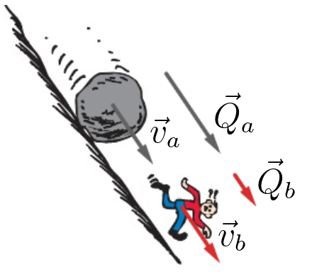
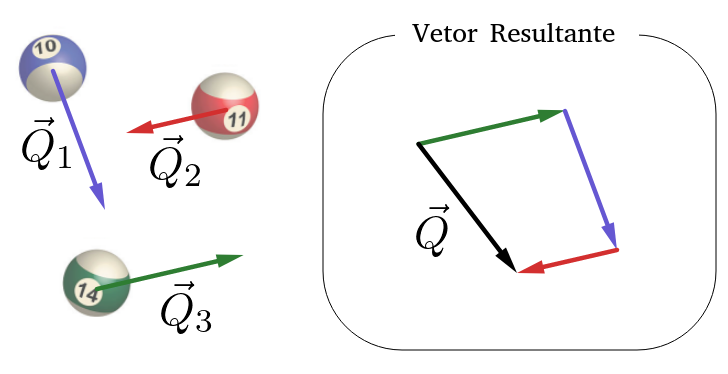
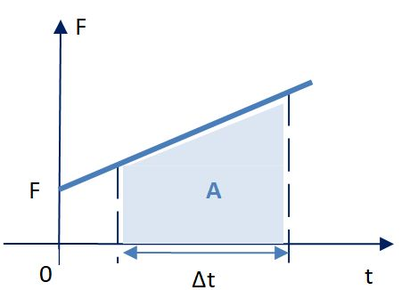
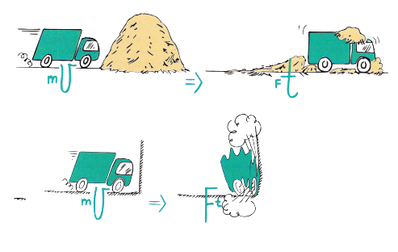
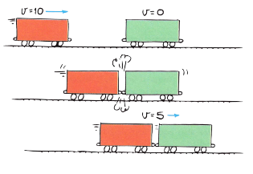

Aula2-24: Momento linear e impulso
Momento linear

O momento linear — também chamado de quantidade de movimento ou momentum — é uma grandeza que expressa o grau de dificuldade para alterar o movimento de um corpo: quanto maior o momento linear de um corpo, mais difícil é modificar o seu movimento.
O momento linear de um corpo é dado pela expressão:
$${ \vec Q = m . \vec v }$$
$${ }$$
Em que:
◦ é a massa do corpo;
◦ é a velocidade do corpo;
A unidade de momento linear no SI é:
$${ [Q] = kg.\frac{m}{s}=N.s }$$
➔ MOMENTO LINEAR DE UM SISTEMA DE CORPOS
Quando o sistema é formado por vários corpos, o momento linear total do sistema é a soma vetorial dos momentos lineares de cada um dos corpos que o compõem:

$${ \vec Q = \vec Q_1 + \vec Q_1 + .. + \vec Q_n }$$
Impulso
O impulso é uma grandeza que mede o efeito de uma força aplicada durante um intervalo de tempo. Como veremos adiante, o impulso da força resultante é igual à variação do momento linear do corpo.
Quando a força é constante, o impulso é dado por:
Em que:
é a força aplicada sobre o corpo;
é o intervalo de tempo durante o qual essa força atua sobre o corpo.
◦ No SI, a unidade de impulso é:
➔ GRÁFICO DA FORÇA X TEMPO
|
 |
A área sob o gráfico da força em função do tempo é numericamente igual ao impulso: |
➔ TEOREMA DO IMPULSO
O teorema do impulso afirma que o impulso da força resultante que age sobre um corpo é igual à variação do momento linear desse corpo:
DEMONSTRAÇÃO DO TEOREMA DO IMPULSO

Nas imagens ao lado, um caminhão perde todo o seu momento linear ao colidir com obstáculos bem diferentes.
Repare: ao colidir com o monte de areia, o impulso é aplicado durante um intervalo de tempo longo. Para produzir o mesmo impulso, quanto maior o tempo de contato, menor é a força média — por isso o caminhão é freado aos poucos, com uma força suave.
Já na colisão com a parede, o impulso é aplicado em um intervalo de tempo muito curto. Para produzir o mesmo impulso, a força média precisa ser muito maior — por isso a batida é violenta e o caminhão para quase instantaneamente.
Conservação do Momento linear

Quando a resultante das forças externas que agem sobre um sistema é nula, a quantidade de movimento total do sistema permanece constante — dizemos que a quantidade de movimento se conserva.
$${ \Delta \vec Q = 0 }$$